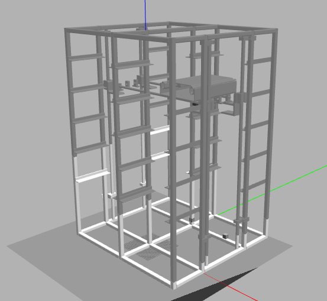

User manual¶
Turn On¶
Turn on the server computer.
Then turn on the warehouse, plug it into a 120V source push the switch to On position, the pilot ligthmust turn on if the warehouse is energized, after remove the emergency stop.
In a Linux console conect the warehouse to the serverwith a USB type B cable, now the warehouse should go to “Home” position and wait.
Use the ’roscore’ comand to initialize the ROS core.
Launch the serial comunication node in other console by executing the command:
rosrun rosserial_python serial_node.py _port:=/dev/ttyUSB0 _baud:=57600 rosrun almacenun listener.py
Where ’port’ is the server USB port conected to Arduino board and’baud’ is comunication speed that should be 57600 baudios. Now you are able to command the warehouse.
To Select a cell type:
rosnode pub -1 /cellSel std_msgs/Int16 "data: <cell number>"
To put a box on SDV type:
rosnode pub -1 /toSDV -1 std_msgs/Int16 "data: <SDV number>"
Shutdown¶
Activate the emergency stop.
Turn off the light switch on the warehouse front panel.
For each open console type ’Ctrl+C’ to close all the nodes.
Once this is done the server computer can be safely shut down.
Safety precaution¶
An emergency button is available which must be activated in case of any emergency.
The machine must not be manipulated while it is running.
{kind=link}
VMD usage¶
{kind=link}
Cloning the project in your catkin_ws folder:
git clone https://gitlab.com/LabFabEx/almacen_material.git
Install additional ROS packages:
sudo apt install ros-melodic-joint-state-controller ros-melodic-effort-controllers ros-melodic-position-controllers -y
Launch gazebo node:
source devel/setup.bash
roslaunch vmd_model_almacen vmd_model_world.launch
To control the warehouse, in other console type:
source devel/setup.bash
roslaunch vmd_model_almacen vmd_model_control.launch
Then publish the positions in the joint topics, where ‘joint1’ is the z axis joint; ‘joint1’ is the x axis joint; and ‘joint3’ is the y axis joint, example:
rostopic pub /vmd_model/joint1_position_controller/command std_msgs/Float64 "data: 0.0"